Source & review coverageمنبع و پوشش مرور
Main article and its embedded figures/tables reviewed. Original pages retain full equations and tables. Bibliography is source transcription; cited works were not independently reviewed.متن اصلی و شکلها و جدولهای درون آن بررسی شدهاند. معادلات و جدولهای کامل در صفحات اصلی حفظ شدهاند. کتابنامه استخراج منبع است و آثار ارجاعشده مستقلاً مرور نشدهاند.
Problem and research objectiveمسئله و هدف
Zhang et al. address three challenges: natural-language preference perception, efficient DRL learning under limited data, and privacy-sensitive sharing. The proposed components are KG-CoT elicitation, LLM reference-action guidance and hierarchical knowledge sharing. A numbered hypothesis list is not explicitly given.ژانگ و همکاران سه چالش ادراک ترجیح زبان طبیعی، یادگیری DRL با داده کم و اشتراک حساس به حریم خصوصی را هدف میگیرند. اجزا KG-CoT، هدایت کنش مرجع و اشتراک سلسلهمراتبی دانشاند؛ فرضیه شمارهدار صریح وجود ندارد. Source · PDF p. 1
Methods and implementationروش و پیادهسازی
Hourly DDPG actions control AC on/off and setpoint, washing-machine operation and battery power. Two-round elicitation identifies season, parameter/direction, then a historical-memory-informed numerical JSON update. Transient memory retains three turns. Manual adjustment, seasonal change or a neighbor-change threshold can trigger interaction; second-round collection probability is max(.2,.8−tCdecay).کنش ساعتی DDPG شامل روشنبودن و دمای تهویه، لباسشویی و توان باتری است. استخراج دو دور ابتدا فصل، سپس پارامتر/جهت و در پایان بهروزرسانی عددی JSON مبتنی بر سابقه را میسازد. حافظه سه نوبت را نگه میدارد. تغییر دستی، فصل یا آستانه همسایه تعامل را تحریک میکند و احتمال دور دوم max(.2,.8−tCdecay) است. Source · PDF p. 4Source · PDF p. 5Source · PDF p. 6
Algorithm1 blends base and LLM reference actions when TriggerLLM fires, otherwise adds exploration noise; ConstrainAction clips AC/battery and enforces a continuous nonrepeated daily laundry cycle. Daily extraction transforms private raw system/preference information into descriptions then generalized shared knowledge. Table1 sets critic/actor learning rates .001/.0001, batch64 and replay10,000.الگوریتم۱ کنش پایه و مرجع LLM را هنگام تحریک ترکیب میکند و در غیر این صورت نویز اکتشاف میافزاید. ConstrainAction حدود تهویه/باتری و چرخه پیوسته و غیرتکراری لباسشویی را اعمال میکند. استخراج روزانه داده خصوصی را به توصیف و سپس دانش مشترک تعمیم میدهد. نرخ منتقد/کنشگر۰٫۰۰۱/۰٫۰۰۰۱، دسته۶۴ و حافظه۱۰هزار است. Source · PDF p. 6Source · PDF p. 7
Experiments and evaluationآزمایش و ارزیابی
Three simulated heterogeneous households are used. Seasonal numerical preference weights and temperatures are predefined through one volunteer, then consistent language interactions are simulated. Five repeated runs supply mean±one standard deviation learning curves. Converged results use the last20days of each season; transition experiments use the first20days. MAPE evaluates elicited numerical preferences.سه خانوار شبیهسازیشده ناهمگون استفاده میشوند. وزن و دمای فصلی با یک داوطلب از پیش تعریف و تعامل زبانی سازگار شبیهسازی میشود. پنج تکرار میانگین و یک انحراف معیار منحنی را میدهند. نتیجه همگرا بیست روز آخر و گذار بیست روز نخست فصل است؛ MAPE ترجیح عددی را میسنجد. Source · PDF p. 7Source · PDF p. 8Source · PDF p. 9
Baselines and ablationsخطمبنا و حذف مؤلفه
Control baselines: fixed-preference DDPG; MPC using a two-layer128-unit neural next-state model and COBYLA; incremental learning with six-hour updates using30%new/70%historical data then COBYLA. MPC/IL receive accurate preference parameters. Elicitation compares feedback-only, feedback+history and KG-CoT. Ablations remove preference elicitation, action guidance or sharing.خطمبناها DDPG با ترجیح ثابت، MPC با شبکه دو لایه۱۲۸ و COBYLA و یادگیری افزایشی ششساعته با۳۰٪جدید/۷۰٪تاریخی هستند. MPC/IL ترجیح دقیق میگیرند. استخراج بازخورد تنها، بازخورد+سابقه و KG-CoT را مقایسه و استخراج ترجیح، هدایت کنش یا اشتراک حذف میشود. Source · PDF p. 8Source · PDF p. 9
Author-stated discussion and limitationsبحث و محدودیت نویسندگان
The authors state that preferences have the largest effect and sharing a smaller direct control effect, consistent with its privacy purpose. Historical memories can bias elicitation after seasonal changes. Generalization evidence is limited to the simulated heterogeneous community and controlled numerical-to-language protocol; the paper discusses expansion and improved real-world deployment.نویسندگان اثر ترجیحات را بزرگتر و اثر مستقیم اشتراک بر کنترل را کوچکتر و متناسب با هدف حریم خصوصی میدانند. سابقه میتواند استخراج پس از تغییر فصل را سوگیر کند. شواهد به جامعه شبیهسازی و پروتکل کنترلشده عدد به زبان محدود است؛ گسترش و استقرار واقعی مطرح میشود. Source · PDF p. 9Source · PDF p. 10
Key reported resultsنتایج کلیدی گزارششده
Reported cost improvement28.8% and comfort9.3% versus fixed preference DDPG; elicitation MAPE.30%/1.25cycles in the controlled protocol.کاهش هزینه۲۸٫۸٪ و افزایش آسایش۹٫۳٪ نسبت به DDPG ثابت؛ MAPE استخراج۰٫۳۰٪ و۱٫۲۵چرخه در پروتکل کنترلشده. Source · PDF p. 8Source · PDF p. 9
Figures, captions & extracted evidenceشکلها، عنوانها و شواهد استخراجشده
Figure 1
Mechanism & workflowسازوکار و گردش کار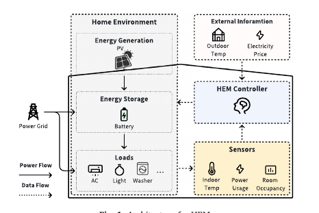
How to read this figureراهنمای خواندن شکل
Trace the inputs, processing stages and outputs, then look for feedback or validation paths. Use the accompanying explanation to distinguish the proposed design from components actually tested in the paper.ورودی، مرحله پردازش و خروجی را دنبال و مسیر بازخورد یا اعتبارسنجی را پیدا کنید. با توضیح همراه، طراحی پیشنهادی را از مؤلفه واقعاً آزمودهشده جدا کنید.
Reader guidance · not an additional author claimراهنمای مطالعه · ادعای اضافی نویسنده نیستWhat this figure showsاین شکل چه نشان میدهد؟
Connects household generation, storage, appliances and grid for the physical energy model.تولید، ذخیرهساز، وسایل و شبکه را در مدل انرژی خانه متصل میکند.
Reported values & evidence limitsمقادیر گزارششده و حدود شواهد
No exact curve samples are transcribed; inspect the original figure. Unlabeled values are not estimated.نمونه دقیق منحنی ثبت نشده است؛ شکل اصلی را ببینید. مقادیر بدون برچسب تخمین زده نمیشوند.
Figure 2
Mechanism & workflowسازوکار و گردش کار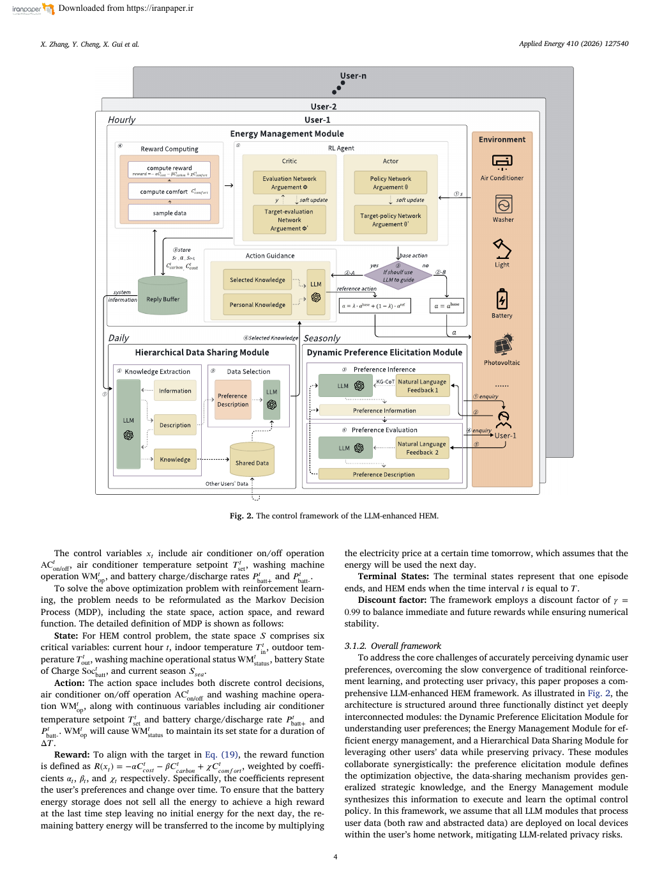
How to read this figureراهنمای خواندن شکل
Trace the inputs, processing stages and outputs, then look for feedback or validation paths. Use the accompanying explanation to distinguish the proposed design from components actually tested in the paper.ورودی، مرحله پردازش و خروجی را دنبال و مسیر بازخورد یا اعتبارسنجی را پیدا کنید. با توضیح همراه، طراحی پیشنهادی را از مؤلفه واقعاً آزمودهشده جدا کنید.
Reader guidance · not an additional author claimراهنمای مطالعه · ادعای اضافی نویسنده نیستWhat this figure showsاین شکل چه نشان میدهد؟
Shows hourly control, daily sharing and seasonal preference elicitation as different loops.کنترل ساعتی، اشتراک روزانه و استخراج فصلی را در حلقههای متفاوت نشان میدهد.
Reported values & evidence limitsمقادیر گزارششده و حدود شواهد
No exact curve samples are transcribed; inspect the original figure. Unlabeled values are not estimated.نمونه دقیق منحنی ثبت نشده است؛ شکل اصلی را ببینید. مقادیر بدون برچسب تخمین زده نمیشوند.
Figure 3
Mechanism & workflowسازوکار و گردش کار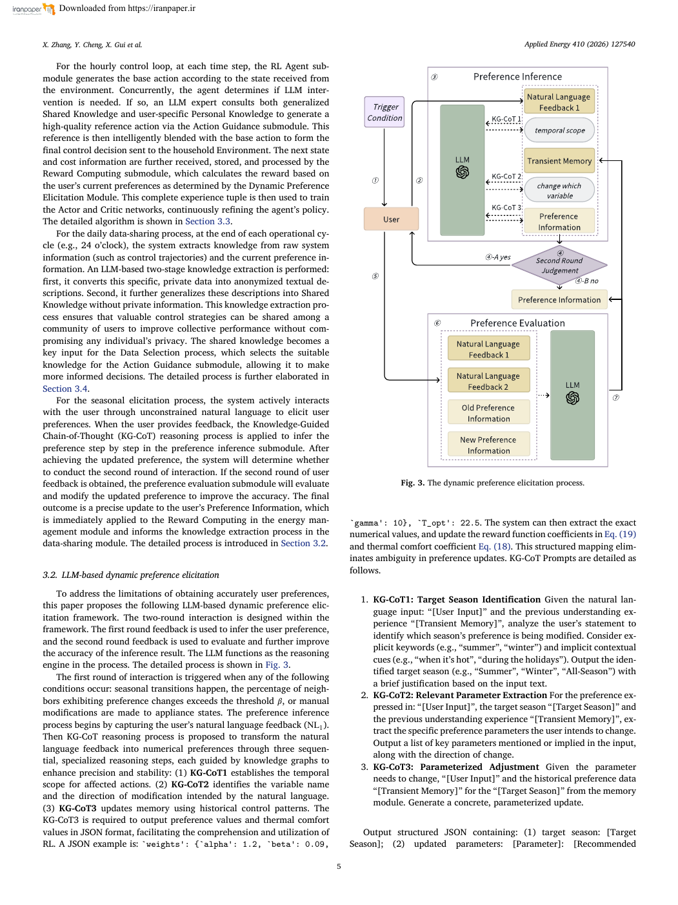
How to read this figureراهنمای خواندن شکل
Trace the inputs, processing stages and outputs, then look for feedback or validation paths. Use the accompanying explanation to distinguish the proposed design from components actually tested in the paper.ورودی، مرحله پردازش و خروجی را دنبال و مسیر بازخورد یا اعتبارسنجی را پیدا کنید. با توضیح همراه، طراحی پیشنهادی را از مؤلفه واقعاً آزمودهشده جدا کنید.
Reader guidance · not an additional author claimراهنمای مطالعه · ادعای اضافی نویسنده نیستWhat this figure showsاین شکل چه نشان میدهد؟
Two-round interaction uses KG-CoT and transient memory to update weights/temperature.تعامل دو دور از KG-CoT و حافظه برای اصلاح وزن/دما استفاده میکند.
Reported values & evidence limitsمقادیر گزارششده و حدود شواهد
No exact curve samples are transcribed; inspect the original figure. Unlabeled values are not estimated.نمونه دقیق منحنی ثبت نشده است؛ شکل اصلی را ببینید. مقادیر بدون برچسب تخمین زده نمیشوند.
Figure 4
Mechanism & workflowسازوکار و گردش کار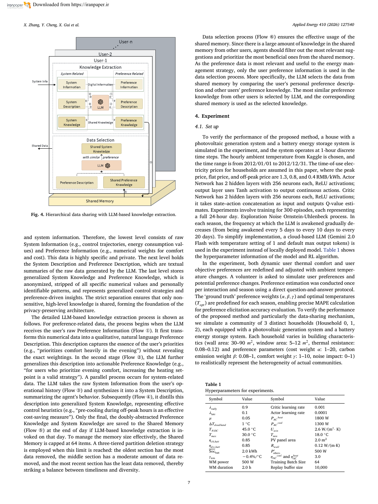
How to read this figureراهنمای خواندن شکل
Trace the inputs, processing stages and outputs, then look for feedback or validation paths. Use the accompanying explanation to distinguish the proposed design from components actually tested in the paper.ورودی، مرحله پردازش و خروجی را دنبال و مسیر بازخورد یا اعتبارسنجی را پیدا کنید. با توضیح همراه، طراحی پیشنهادی را از مؤلفه واقعاً آزمودهشده جدا کنید.
Reader guidance · not an additional author claimراهنمای مطالعه · ادعای اضافی نویسنده نیستWhat this figure showsاین شکل چه نشان میدهد؟
Separates raw system/preference data, descriptions and generalized knowledge; knowledge selection feeds action guidance.داده خام، توصیف و دانش تعمیمیافته را جدا و انتخاب دانش را به هدایت کنش متصل میکند.
Reported values & evidence limitsمقادیر گزارششده و حدود شواهد
No exact curve samples are transcribed; inspect the original figure. Unlabeled values are not estimated.نمونه دقیق منحنی ثبت نشده است؛ شکل اصلی را ببینید. مقادیر بدون برچسب تخمین زده نمیشوند.
Figure 5
Time & behaviorزمان و رفتار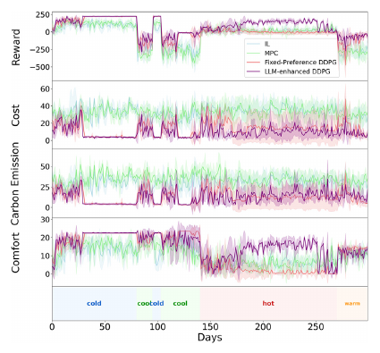
How to read this figureراهنمای خواندن شکل
Read the time window and units before comparing traces. Match each curve to its legend and the same operating conditions; unlabeled samples are not numerical measurements extracted by this report.پیش از مقایسه مسیرها، بازه زمان و واحدها را بخوانید. هر منحنی را به راهنما و شرایط یکسان وصل کنید؛ نمونه بدون برچسب، اندازهگیری عددی استخراجشده در این گزارش نیست.
Reader guidance · not an additional author claimراهنمای مطالعه · ادعای اضافی نویسنده نیستWhat this figure showsاین شکل چه نشان میدهد؟
Fixed DDPG, MPC, IL and proposed reward trajectories are compared across seasons; curves are means over5runs with±1SD shading.مسیر پاداش چهار روش در فصلها؛ میانگین پنج اجرا با سایه یک انحراف معیار است.
Reported values & evidence limitsمقادیر گزارششده و حدود شواهد
Exact converged table totals: reward41.49/−48.11/−49.04/68.22 for fixed/IL/MPC/proposed; costs8.760/33.085/33.583/6.233.کل پاداش روش ثابت/IL/MPC/پیشنهادی۴۱٫۴۹/−۴۸٫۱۱/−۴۹٫۰۴/۶۸٫۲۲؛ هزینه۸٫۷۶۰/۳۳٫۰۸۵/۳۳٫۵۸۳/۶٫۲۳۳ است.
Figure 6
Comparison & resultsمقایسه و نتایج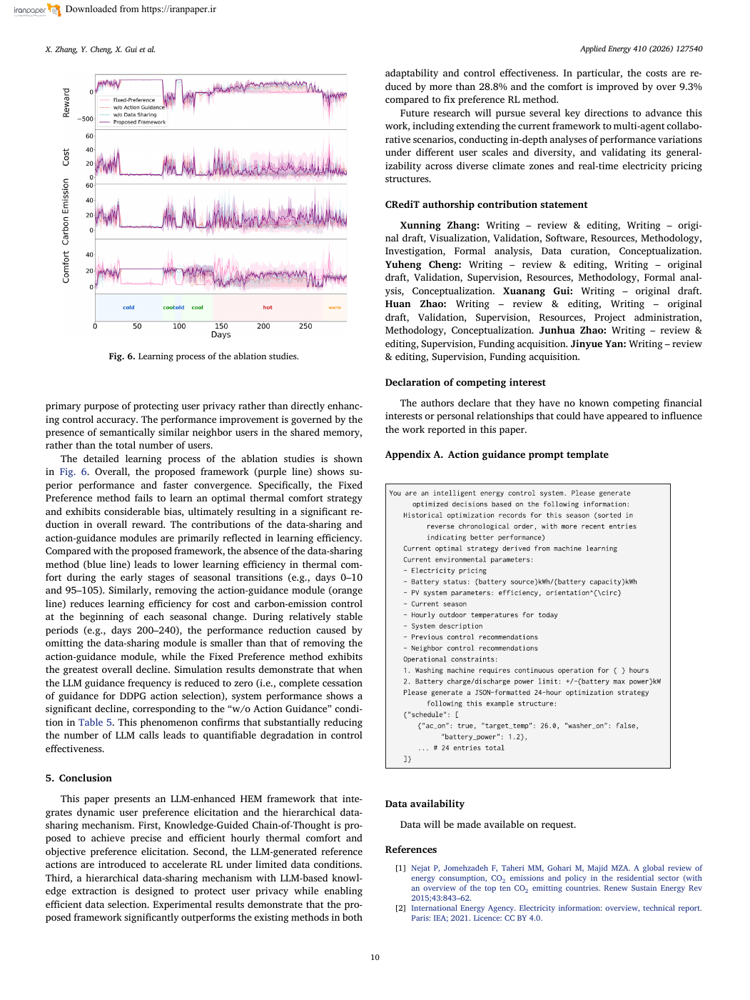
How to read this figureراهنمای خواندن شکل
Check the axes, units, panel labels and the caption’s definition of better performance. Compare methods under the stated conditions; keep uncertainty, tradeoffs and normalization separate from headline gains.محور، واحد، پنل و تعریف عملکرد بهتر در عنوان را بررسی کنید. روشها را در شرایط بیانشده مقایسه و عدمقطعیت، مصالحه و نرمالسازی را از بهبود شاخص اصلی جدا نگه دارید.
Reader guidance · not an additional author claimراهنمای مطالعه · ادعای اضافی نویسنده نیستWhat this figure showsاین شکل چه نشان میدهد؟
Compares complete framework with fixed preferences, no guidance and no sharing.چارچوب کامل با ترجیح ثابت، حذف هدایت و حذف اشتراک مقایسه میشود.
Reported values & evidence limitsمقادیر گزارششده و حدود شواهد
Summer reward in Table5: fixed−7.65; no guidance17.11; no sharing33.02; full43.81.پاداش تابستان جدول۵: ثابت−۷٫۶۵؛ بدون هدایت۱۷٫۱۱؛ بدون اشتراک۳۳٫۰۲؛ کامل۴۳٫۸۱.
Tables & numerical evidenceجدولها و شواهد عددی
Table 1 · Experiment hyperparametersابرپارامترها
Actor .0001; critic .001; batch64; replay10,000; battery efficiency .85; AC setpoint18–30°C.کنشگر۰٫۰۰۰۱، منتقد۰٫۰۰۱، دسته۶۴، حافظه۱۰هزار، بازده باتری۰٫۸۵ و دما۱۸–۳۰.
Table 1 · PDF p. 7Table 2 · Seasonal performance comparisonمقایسه فصلی
Proposed total cost6.233 versus fixed8.760; comfort13.391 versus12.249; carbon10.436 versus7.629. Thus lower cost does not imply every metric improves.هزینه پیشنهادی۶٫۲۳۳ دربرابر۸٫۷۶۰؛ آسایش۱۳٫۳۹۱ دربرابر۱۲٫۲۴۹؛ کربن۱۰٫۴۳۶ دربرابر۷٫۶۲۹؛ هزینه کمتر به معنی بهبود همه معیارها نیست.
Table 2 · PDF p. 8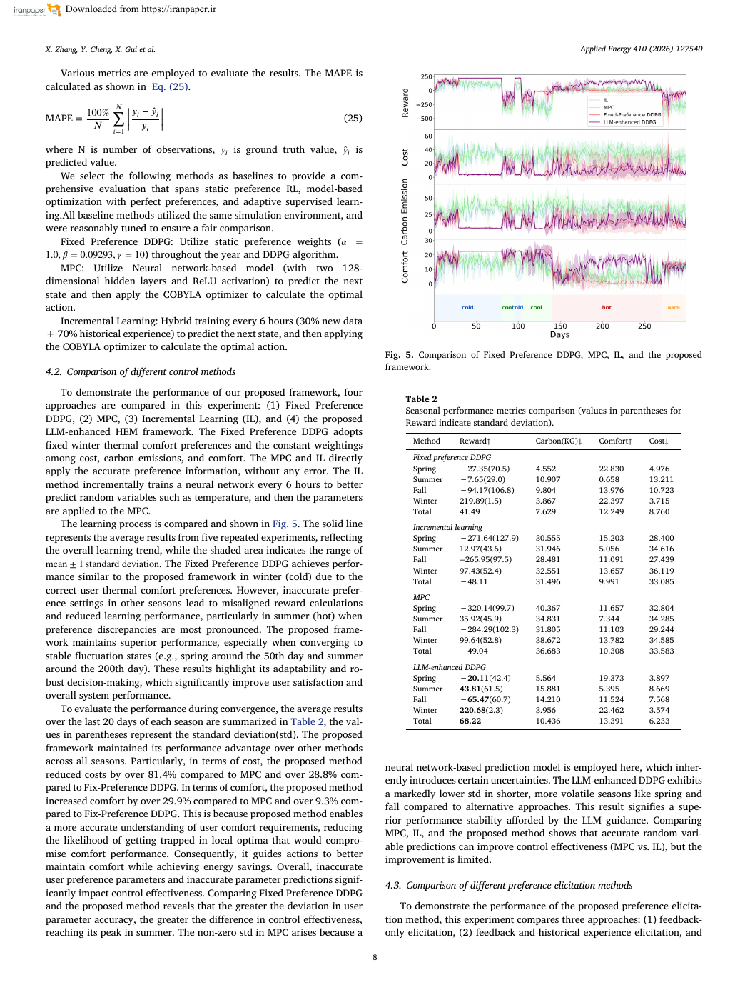
Table 3 · Elicitation accuracyدقت استخراج
Feedback only9.50iterations/42.60%MAPE; history3.50/5.43%; KG-CoT1.25/.30%.بازخورد تنها۹٫۵۰تکرار/۴۲٫۶۰٪؛ با سابقه۳٫۵۰/۵٫۴۳٪؛ KG-CoT۱٫۲۵/۰٫۳۰٪.
Table 3 · PDF p. 9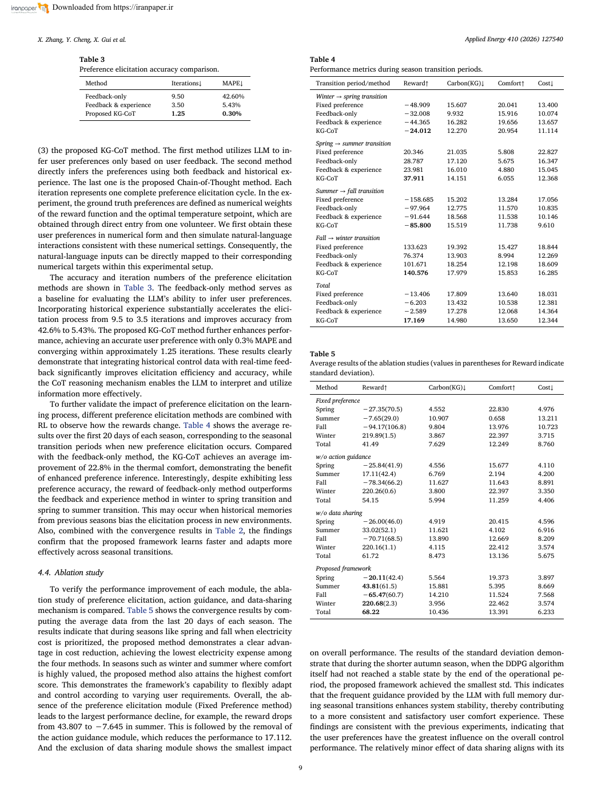
Table 4 · Season-transition performanceعملکرد گذار فصل
First20days; total reward fixed−13.406, feedback−6.203, history−2.589, KG-CoT17.169.بیست روز نخست؛ کل پاداش ثابت−۱۳٫۴۰۶، بازخورد−۶٫۲۰۳، سابقه−۲٫۵۸۹، KG-CoT۱۷٫۱۶۹.
Table 4 · PDF p. 9Table 5 · Module ablation outcomesنتایج حذف مؤلفه
Total reward fixed41.49, no-guidance54.15, no-sharing61.72, full68.22. Full cost6.233 exceeds no-guidance4.406, showing multi-objective tradeoffs.کل پاداش ثابت۴۱٫۴۹، حذف هدایت۵۴٫۱۵، حذف اشتراک۶۱٫۷۲، کامل۶۸٫۲۲؛ هزینه کامل۶٫۲۳۳ از حذف هدایت۴٫۴۰۶ بیشتر و نشاندهنده مصالحه چندهدفه است.
Table 5 · PDF p. 9Critical analysis — reviewer assessmentتحلیل انتقادی — ارزیابی مرورگر
Reviewer observation: one volunteer’s predefined targets and simulated matching utterances support a controlled elicitation benchmark, not broad real-resident intent accuracy. Semantic generalization/anonymization is not a formal privacy guarantee.ملاحظه مرورگر: هدف ازپیشتعریفشده یک داوطلب و گفتار سازگار، معیار کنترلشده است و دقت نیت همه ساکنان را اثبات نمیکند. ناشناسسازی معنایی تضمین رسمی حریم خصوصی نیست. Source · PDF p. 7Source · PDF p. 9
Role in our researchنقش مقاله در پژوهش ما
Why is it important to our research?چرا برای پژوهش ما مهم است؟
Important for preference drift, elicitation, history and the distinction between user-intent errors and control errors.برای رانش ترجیح، استخراج، سابقه و تمایز خطای نیت و خطای کنترل مهم است. Source · PDF p. 5Source · PDF p. 9
What does it contribute to our research?چه سهمی در پژوهش ما دارد؟
Contributes a concrete JSON preference-update mechanism and ablations isolating elicitation/guidance/sharing.سازوکار ملموس اصلاح JSON و حذف مؤلفههای استخراج، هدایت و اشتراک را میدهد. Source · PDF p. 5Source · PDF p. 6Source · PDF p. 9
How can we employ it?چگونه از آن استفاده کنیم؟
Adapt elicitation to typed preference events and logged authorization in our C1 scenarios; test historical-memory bias and preference estimation separately from causal equipment diagnosis.استخراج به رویداد ترجیح نوعدار و مجوز ثبتشده در C1 اقتباس شود؛ سوگیری حافظه جدا از تشخیص تجهیز آزموده شود. Source · PDF p. 5Source · PDF p. 9
Should we implement it as a baseline?آیا باید آن را بهعنوان خطمبنا پیاده کنیم؟
Optional adapted preference baseline; implement KG-CoT/feedback-only comparisons if preference acquisition is evaluated. Full DDPG/data-sharing reproduction is not required for the central causal intervention claim.خطمبنای اختیاری ترجیح؛ اگر استخراج ارزیابی شود KG-CoT/بازخورد تنها اقتباس شوند. بازتولید کامل DDPG و اشتراک برای ادعای اصلی الزامی نیست. Source · PDF p. 8Source · PDF p. 9
Original source pagesصفحات اصلی منبع
PDF page 1
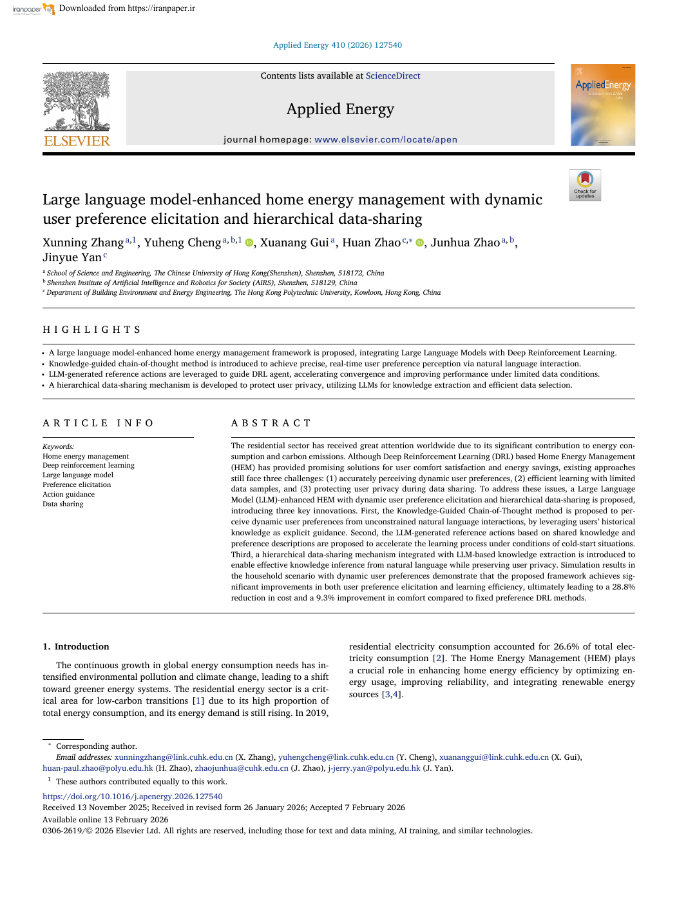
PDF page 2
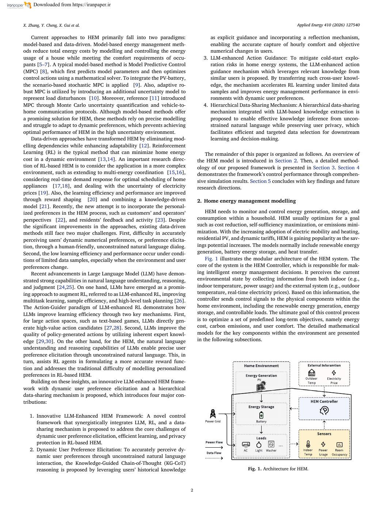
PDF page 3
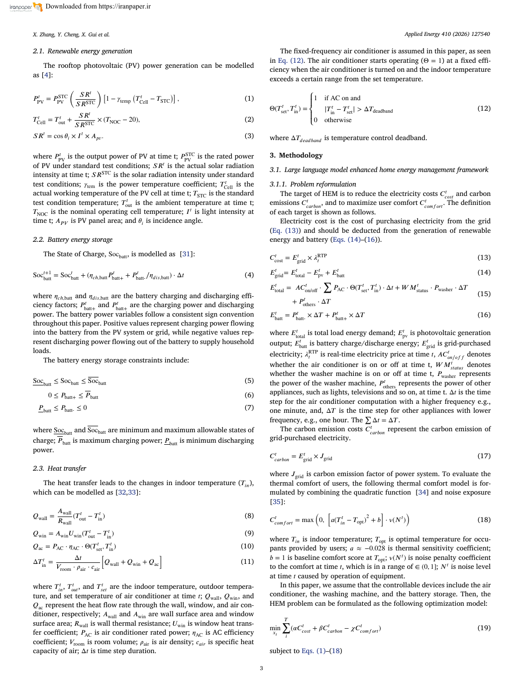
PDF page 6
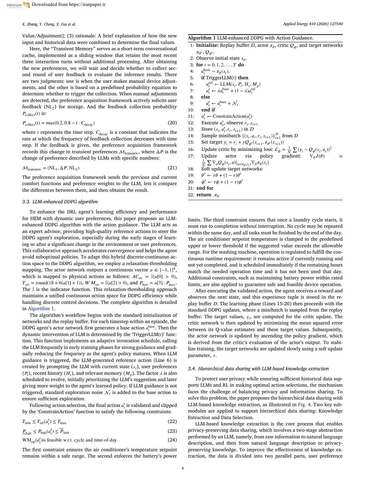
PDF page 11
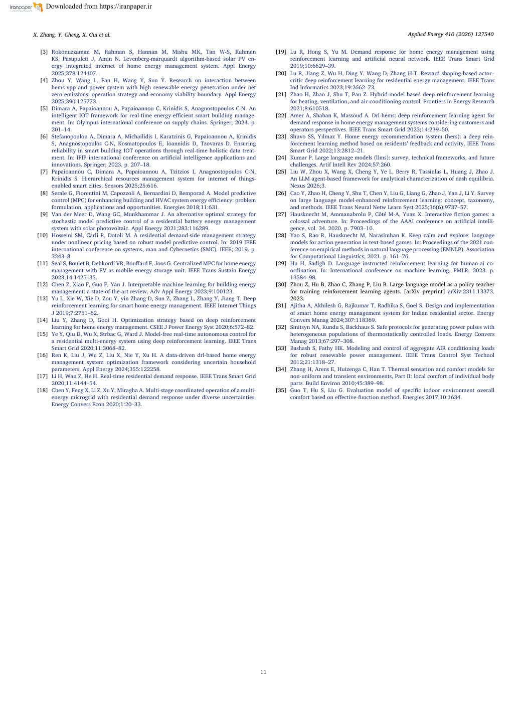
Full bibliographyکتابنامه کامل
Full bibliography transcribed from the source PDF. Original reference pages are the authority for formatting and extraction ambiguities; cited works were not independently analyzed just because they appear here.کتابنامه کامل از PDF منبع استخراج شده است. صفحه اصلی مرجع نگارش و ابهام استخراج است؛ درج منبع به معنی تحلیل مستقل آن اثر نیست.